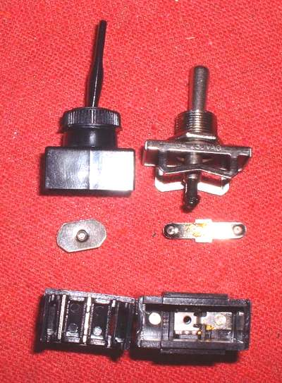
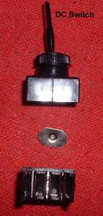
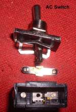
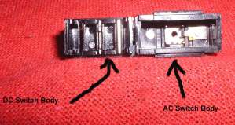
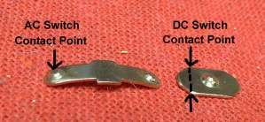
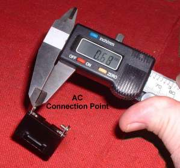
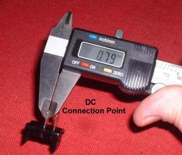
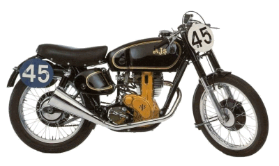
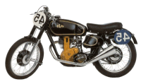

AC & DC Switches 
¶ OK, all I have to do is add one switch and I got Stereo to all the helmets and the sidecar. Any old switch will do, right? Aren't they all the same?
NO!
Just about every Street Motorcycle made has an electrical system using six or twelve volts. If you plan to switch any of those volts on or off you need a Twelve Volt DC Switch. You Do Not use a common 110-120 volt AC Switch. "Oh man", you say. "It's just a switch and Twelve volts is a lot less then 110-120 volts, it'll work". Well, no, not really.
  This cuts way down on the arcing that occurs when you make or break the contact point inside the switch and keeps the Switch Contact Points much cooler. With DC current there is no reversal in the current so there is a much bigger arc when the switch is thrown. A DC switch is made with much heavier metal at the contact point. Think of the switch point as a small arc welder with the DC current. You simply do not have that arc, welding away, on that switch point, with AC current.
I took an AC Switch and a DC Switch part to show you the difference.
 DC & AC Switch Bodies |
 AC & DC Switch Contact Points |
You will notice the AC Switch Contact Point is very small, about 1.5 millimeters in diameter. A contact area of about 1.76 square millimeters. This works fine with Alternating Current. The DC Switch Contact Point is flat and about 8.37 millimeters long and .79 millimeters wide. A contact area of 6.6 square millimeters. Provided my somewhat fuzzy understanding of math is right, this gives about four times more contact area. This extra contact area is necessary for DC current.
 AC Connection Point |
 DC Connection Point |
Notice too, the DC connection point, on the outside of the switch, is thicker then the AC connection point. About 14% bigger. To top it off, they tell me the metal used in DC Switches is different from the metal used in AC Switches.
Sooo... bottom line, what does all this stuff mean? Simply this.
Use DC Switches for 6-12 volt DC current on your motorcycle.
DO NOT Use AC Switches on your 6-12 volt DC current motorcycle.
Got that? Simple, isn't it?
As I write this there is a big national debate in the USA over, ironically, Human AC/DC switches. Same rules apply. The switch HAS to be designed, by the manufacturer, for its intended use. Otherwise it is going to burn out.
No matter how badly you want to, no matter how many laws you pass, no matter how many chemicals you take to change your body, no matter how much the majority of people wants it, you CAN'T change your sex. The Bible tells us so.
"So God created man in his own image, in the image of God created he him; male and female created he them."
"Woe to those who call evil good, and good evil; who put darkness for light, and light for darkness; who put bitter for sweet, and sweet for bitter!"
"Who changed the truth of God into a lie, and worshipped and served the creature more than the Creator, who is blessed for ever. Amen.
For this cause God gave them up unto vile affections: for even their women did change the natural use into that which is against nature: And likewise also the men, leaving the natural use of the woman, burned in their lust one toward another; men with men working that which is unseemly, and receiving in themselves that recompence of their error which was meet. And even as they did not like to retain God in their knowledge, God gave them over to a reprobate mind, to do those things which are not convenient;
Being filled with all unrighteousness, fornication, wickedness, covetousness, maliciousness; full of envy, murder, debate, deceit, malignity; whisperers, Backbiters, haters of God, despiteful, proud, boasters, inventors of evil things, disobedient to parents, Without understanding, covenantbreakers, without natural affection, implacable, unmerciful: Who knowing the judgment of God, that they which commit such things are worthy of death, not only do the same, but have pleasure in them that do them."
Girls are girls, boys are boys. YOU CAN'T CHANGE DNA. If you try, it will burn you out.
I say again. Simple, isn't it? But...
Like I always say,
it's not my body, and it won't HURT me at all!"

 |
 |
Copyright © 1999-2016 dansmc.com. All rights reserved.